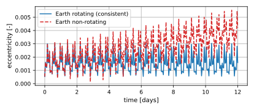
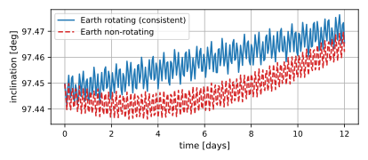

scenarioOrbitConsistencyVerification
Overview
This scenario verifies that Basilisk’s orbit propagation with a spherical-harmonic gravity field is consistent with independent propagators, and demonstrates why the planet rotation must be supplied when the gravity field contains tesseral/sectoral terms (spherical-harmonic order \(m \ge 1\)).
It propagates a near-circular, sun-synchronous LEO orbit (TerraSAR-X-like) under the GGM03S Earth field, twice, with identical initial conditions, integrator, and step size. The only difference is whether a planet-orientation message is connected:
Earth rotating – a SPICE interface is attached via the gravity body factory’s
createSpiceInterfacemethod, so the field is evaluated in the rotating planet-fixed frame.Earth non-rotating – no orientation message is connected, so the gravity effector falls back to an identity planet orientation and evaluates the field in the inertial frame.
Background
The spherical-harmonic field is evaluated in the planet-fixed frame. Zonal terms (order \(m = 0\), e.g. \(J_2\)) depend only on latitude and are unaffected by the planet rotation. Tesseral and sectoral terms (order \(m \ge 1\), e.g. \(C_{22}\)) depend on the body longitude. For a rotating planet these terms average out over each day and produce only small short-period effects. If the planet is (incorrectly) held fixed in inertial space, those terms no longer average out and instead force large spurious secular/long-period drift in the eccentricity vector and the inclination, while the semi-major axis and the \(J_2\)-driven RAAN precession remain essentially unchanged.
This is the inconsistency reported in issue #1352, where the eccentricity vector and inclination of a Basilisk LEO propagation diverged from Orekit, GMAT, and SpOCK results (which mutually agree). Those tools all model Earth rotation; the Basilisk script that produced the discrepancy did not connect a planet-orientation message. With Earth rotation connected, as in the rotating case here, the eccentricity and inclination remain bounded, recovering consistency with the external propagators.
When a spherical-harmonic body that has order \(\ge 1\) terms is used without
an orientation message, C++ Module: gravityEffector now logs a BSK_WARNING at reset.
Running the script
The script is found in the folder basilisk/examples and executed by using:
python3 scenarioOrbitConsistencyVerification.py
Illustration of Simulation Results
The eccentricity and inclination of the non-rotating case drift away secularly, whereas the rotating case stays bounded – the bounded behavior is what matches the externally validated propagators.
The figures below are generated by the integrated test with a short, low-degree,
coarse-step run (simDays = 12.0, gravDeg = 8, stepSeconds = 30.0); a longer
higher-degree run (the script default) makes the drift even more pronounced.


- scenarioOrbitConsistencyVerification.propagate(useEarthRotation, simDays, gravDeg, sampleMinutes, stepSeconds=10.0)[source]
Propagate the reference orbit and return arrays of (days, a, e, inc[deg]).
- Parameters:
useEarthRotation (bool) – connect a SPICE planet-orientation message.
simDays (float) – propagation duration in days.
gravDeg (int) – spherical-harmonic degree/order of the GGM03S field.
sampleMinutes (float) – output sampling period in minutes.
stepSeconds (float) – integration time step in seconds.
- scenarioOrbitConsistencyVerification.run(show_plots, simDays=30.0, gravDeg=20, stepSeconds=10.0)[source]
Propagate the reference orbit with and without Earth rotation and compare.
Returns the ratio of the non-rotating to rotating eccentricity excursion (which should be large, demonstrating the spurious drift) and the figure list.
- Parameters:
show_plots (bool) – show the matplotlib plots.
simDays (float) – propagation duration in days.
gravDeg (int) – spherical-harmonic degree/order of the GGM03S field.
stepSeconds (float) – integration time step in seconds.